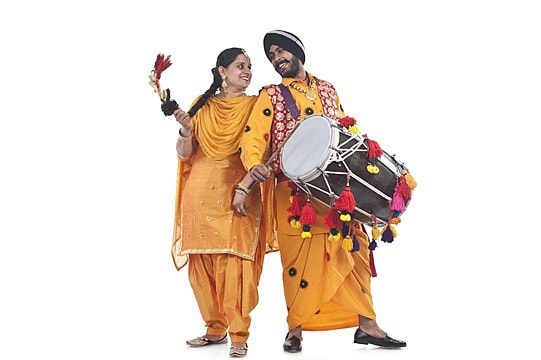

The folk dances of Punjab are vibrant expressions of the region's rich cultural heritage, showcasing the joy, energy, and spirit of the people. These dances are deeply rooted in the agricultural lifestyle of Punjab and are typically performed during festivals, weddings, harvest celebrations, and other community gatherings. The dances are marked by lively music, colorful attire, and dynamic movements, which convey both the hard work and the celebrations of life in the region. One of the most famous and energetic folk dances of Punjab is Bhangra. Originally performed by farmers to celebrate the harvest season, Bhangra has become one of the most popular and well-known folk dances worldwide. It is characterized by vigorous and rhythmic movements, often accompanied by traditional drumming, especially the dhol. The dancers wear colorful outfits, including turbans and flowing robes, and perform with great enthusiasm, jumping, spinning, and clapping to the beat of the music. Today, Bhangra is performed at various celebrations, including weddings, festivals, and cultural events, both in India and across the globe. Another significant folk dance is Gidda, which is performed by women and is the counterpart to Bhangra. Gidda is characterized by graceful movements and rhythmic clapping, with dancers often singing traditional folk songs during the performance. The dance showcases the beauty and strength of women, with intricate hand gestures and twirls that express joy, celebration, and unity.